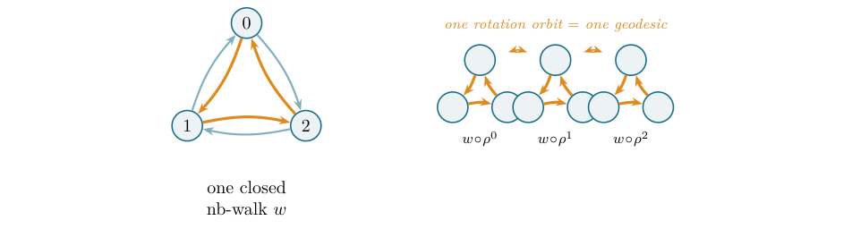

What a Determinant’s Derivative Knows: Jacobi’s Formula and Newton’s Identity for Matrix Traces in Lean 4
At a glance
What the paper contributes
A machine-checked formalization, in Lean 4 / Mathlib, of Jacobi's formula and Newton's identity for matrix traces, composed with Bass's formula. The mathematics is classical; the contribution is the formalization.
- Jacobi's formula in its algebraic form, (det M)′ = tr(adj M · M′) for a matrix of polynomials over a commutative ring (Theorem 1), for which the paper found no prior proof in any proof assistant. Axioms:
propext,Classical.choice,Quot.sound. - Newton's identity for matrix traces to all orders, eigenvalue-free: (charpolyRev M)′ = −charpolyRev M · Σk tr(Mk+1) Xk (Theorem 2), through the resolvent series (I − XM)−1 = Σk MkXk over formal power series (Lemma 1).
- Matrix powers count walks, also for directed graphs (Lemma 2), with the trace rewritten over cyclic walks and its weight invariant under rotation.
- Composed with Bass's formula: the generating function of the non-backtracking counts Nk = tr(Bk) from the adjacency data (A, D) (Theorem 3), and tr(Bk) counts rooted closed non-backtracking walks (Theorem 4).
- The boundary, as the paper states it: rooted walks, not geodesic classes; the prime-geodesic Euler product is mapped, not built.
🚀 Start here: Theorem 1: Jacobi's formula: (det M)′ = tr(adj M · M′) for a matrix of polynomials.
Main results:
- Theorem 1: Jacobi's formula: (det M)′ = tr(adj M · M′) for a matrix of polynomials
- Theorem 2: Newton's identity for matrix traces: (charpolyRev M)′ = −charpolyRev M · Σ tr(Mᵏ⁺¹)Xᵏ
- Theorem 3: the Ihara Nₖ identity: Σ tr(Bᵏ⁺¹)Xᵏ from the adjacency data (A, D)
🗺️ Map of the results (click a box to go to it)
Dependencies in the written proof: an arrow A → B means that this proof of B uses A. Every result rests on its written proof; the tags record what was checked besides, and each statement's “Evidence & scope” block says how far. The colour of a box is its strongest tag, in the order above; the tags in the box give the rest. Boxes with a thick border are the main results; click a box to read the statement.
📐 Setting (copied from the paper, §2)
For a matrix \(M\) whose entries are polynomials in a formal variable, write \(M'\) for the entrywise derivative and \(\det M\) for the determinant (a polynomial). \(\operatorname {adj}M\) is the adjugate (the transpose of the cofactor matrix) (§1). (§4) Write \(\operatorname {charpolyRev}M\) for the reversed characteristic polynomial \(\det (I-XM)\)—a polynomial with constant term \(1\), hence a unit in the power-series ring. (§6) Let \(B\) be Hashimoto’s operator, \(A\) the adjacency and \(D\) the degree matrix; Bass’s formula reads \((1-X^2)^{|V|}\det (I-XB)=(1-X^2)^{|E|}\det (I-XA+X^2(D-I))\).
2 Jacobi’s formula
For an \(n\times n\) matrix \(M\) of polynomials over a commutative ring,
The statement is sorry-free (Matrix.derivative_det); #print axioms reports only propext, Classical.choice, Quot.sound.
✅ Checked when this page was built: Jacobi.lean compiles with Lean 4.35.0, no errors, no sorry. Axioms — derivative_det: propext, Classical.choice, Quot.sound.
Reproduce: Lean 4.35.0, Mathlib f0b4c8150aa0; in that Lean project, lake env lean Jacobi.lean (SHA-256 of the compiled file: 6ec866e48406ee3e…; a source page on this site may show it with comments edited, under its own hash).
🆕 Classical and new: classical; the paper claims the first machine-checked proof it is aware of of the algebraic formula (N1), after searching Mathlib, the AFP, Coq/Rocq, HOL Light and Mizar; Mathlib had only the analytic derivative of det.
↳ Used in: Theorem 2, Theorem 3
Formalized in Lean (see the linked declarations).
🖼️ Figure 1

The spine of the paper. One elementary fact—a determinant’s derivative is a trace (Jacobi)—taken to all orders becomes the dictionary between a matrix’s traces and its characteristic polynomial (Newton), and composed with Bass’s determinant formula reaches the closed non-backtracking walk counts \(N_k={\operatorname {tr}}(B^k)\) of a graph. Each arrow is a theorem of this paper.
🛡️ Evidence & scope
Program: Jacobi on one 3×3 matrix of polynomials, exact (SymPy). verify_jacobi_newton.py
3 The resolvent series: an eigenvalue-free engine
For an \(n\times n\) matrix \(M\) over a commutative ring, the resolvent series is the matrix of formal power series \(\bigl(\, \sum _k M^k X^k\, \bigr)\), written resolventSeries M.
✅ Checked when this page was built: Jacobi.lean compiles with Lean 4.35.0, no errors, no sorry. Axioms — resolventSeries: propext, Classical.choice, Quot.sound.
Reproduce: Lean 4.35.0, Mathlib f0b4c8150aa0; in that Lean project, lake env lean Jacobi.lean (SHA-256 of the compiled file: 6ec866e48406ee3e…; a source page on this site may show it with comments edited, under its own hash).
↳ Used in: Lemma 1
Formalized in Lean (see the linked declarations).
Both are sorry-free (one_sub_smul_mul_resolventSeries, trace_resolventSeries). The inverse identity is proved from the fixed-point equation \(R=I+XM\! \cdot \! R\) by a single rearrangement—no eigenvalues, no algebraic closure, over any commutative ring.
✅ Checked when this page was built: Jacobi.lean compiles with Lean 4.35.0, no errors, no sorry. Axioms — one_sub_X_smul_mul_resolventSeries, trace_resolventSeries: propext, Classical.choice, Quot.sound.
Reproduce: Lean 4.35.0, Mathlib f0b4c8150aa0; in that Lean project, lake env lean Jacobi.lean (SHA-256 of the compiled file: 6ec866e48406ee3e…; a source page on this site may show it with comments edited, under its own hash).
🆕 Classical and new: the paper counts the resolvent series among the pieces not in the library (N3).
↳ Used in: Theorem 2
Formalized in Lean (see the linked declarations).
4 Newton’s identity for matrix traces
For an \(n\times n\) matrix \(M\) over a commutative ring, in the ring of formal power series,
Equivalently \(\sum _{k\ge 1}{\operatorname {tr}}(M^k)X^k=-X\, (\operatorname{charpolyRev}M)'/\operatorname{charpolyRev}M\), the logarithmic derivative. The statement is sorry-free (Matrix.charpolyRev_logDeriv), over any commutative ring, eigenvalue-free. At the linear coefficient it specializes to the lemma Mathlib already had, \({\operatorname {tr}}M=-\, [\, X^1\, ]\, \operatorname{charpolyRev}M\).
✅ Checked when this page was built: Jacobi.lean compiles with Lean 4.35.0, no errors, no sorry. Axioms — coe_derivative_charpolyRev_eq_neg_mul_mk_trace_pow, derivative_coe_charpolyRev: propext, Classical.choice, Quot.sound.
Reproduce: Lean 4.35.0, Mathlib f0b4c8150aa0; in that Lean project, lake env lean Jacobi.lean (SHA-256 of the compiled file: 6ec866e48406ee3e…; a source page on this site may show it with comments edited, under its own hash).
🆕 Classical and new: classical; the matrix-trace form, which Mathlib had only at the linear coefficient (N2).
↳ Used in: Theorem 3
Formalized in Lean (see the linked declarations).
🛡️ Evidence & scope
Program: the identity modulo X⁸ for one 3×3 and one 2×2 integer matrix, exact (SymPy). verify_jacobi_newton.py
5 Matrix powers count walks
For a matrix \(M\) over a commutative semiring, the \((i,j)\) entry of \(M^k\) is the sum, over length-\(k\) vertex walks from \(i\) to \(j\), of the product of the edge weights (pow_apply_eq_sum). For the \(0\)–\(1\) adjacency matrix of a decidable relation—a finite directed graph—this is a genuine count: \(\bigl((\text{adjacency})^k\bigr)_{ij}\) is the number of length-\(k\) directed walks from \(i\) to \(j\) (relMatrix_pow_apply). Both are sorry-free.
✅ Checked when this page was built: WalkCount.lean compiles with Lean 4.35.0, no errors, no sorry. Axioms — pow_apply_eq_sum, relMatrix_pow_apply, trace_pow_eq_sum_cyclicProd, cyclicProd_comp_finRotate, cyclicProd_comp_finRotate_iterate: propext, Classical.choice, Quot.sound.
Reproduce: Lean 4.35.0, Mathlib f0b4c8150aa0; in that Lean project, lake env lean WalkCount.lean (SHA-256 of the compiled file: 7b1bf7dcaf36423e…; a source page on this site may show it with comments edited, under its own hash).
🆕 Classical and new: the directed-graph walk count is among the pieces not in the library (N3).
↳ Used in: Theorem 4
Formalized in Lean (see the linked declarations).
6 The Ihara counts, composed
With \(Q=\det (I-XA+X^2(D-I))\), in the power-series ring,
The two \((1-X^2)\)-powers and both determinants are units, so the division is the formal \(\mathtt{invOfUnit}\); the identity is sorry-free (ihara_Nk_explicit). It expresses the non-backtracking counts \(N_k={\operatorname {tr}}(B^k)\) purely through the adjacency data \((A,D)\).
✅ Checked when this page was built: TraceFormula.lean compiles with Lean 4.35.0, no errors, no sorry. Axioms — ihara_Nk_explicit: propext, Classical.choice, Quot.sound.
Reproduce: Lean 4.35.0, Mathlib f0b4c8150aa0; in that Lean project, lake env lean TraceFormula.lean (SHA-256 of the compiled file: 2a7348dcd68d3e94…; a source page on this site may show it with comments edited, under its own hash).
🆕 Classical and new: composition of Jacobi and Newton with the author’s Bass formalization; Bass’s theorem is classical.
↳ Not used by another result of the paper.
Formalized in Lean (see the linked declarations).
🖼️ Figure 2
![\includegraphics[width=1.0\textwidth ]{figures/paperfig-2.png}](images/img-0002.png)
Closed non-backtracking walks, and the rotation that groups them. Left: the triangle \(K_3\) has six darts; one closed non-backtracking walk of length \(3\) is shown in amber (the reverse darts, in grey, would backtrack). Right: rotating the basepoint by the cyclic shift \(\rho =\mathtt{finRotate}\) permutes the three rooted walks of this orbit while leaving the cyclic weight fixed (cyclicProd_comp_finRotate)—so a single geodesic accounts for an orbit of rooted walks. Here \({\operatorname {tr}}(B^3)=6\): two orbits (the cycle and its reverse), three basepoints each.
🛡️ Evidence & scope
Program: Bass’s identity on K₃, exact (SymPy). verify_jacobi_newton.py
sorry-free (trace_hashimoto_pow).
✅ Checked when this page was built: NbWalkCount.lean compiles with Lean 4.35.0, no errors, no sorry. Axioms — trace_hashimoto_pow: propext, Classical.choice, Quot.sound.
Reproduce: Lean 4.35.0, Mathlib f0b4c8150aa0; in that Lean project, lake env lean NbWalkCount.lean (SHA-256 of the compiled file: 234ce32e57f69492…; a source page on this site may show it with comments edited, under its own hash).
↳ Not used by another result of the paper.
Formalized in Lean (see the linked declarations).
🛡️ Evidence & scope
Program: tr(Bᵏ) against a brute-force count of rooted closed non-backtracking walks on K₃, k = 1..6: 0, 0, 6, 0, 0, 6. verify_jacobi_newton.py
References
- 1
H. Bass, The Ihara–Selberg zeta function of a tree lattice, Internat. J. Math. 3 (1992), 717–797. 🔎 find it
- 2
A. E. Brouwer and W. H. Haemers, Spectra of Graphs, Universitext, Springer, 2012. 🔎 find it
- 3
S. Hoory, N. Linial, and A. Wigderson, Expander graphs and their applications, Bull. Amer. Math. Soc. 43 (2006), 439–561. 🔎 find it
- 4
R. A. Horn and C. R. Johnson, Matrix Analysis, 2nd ed., Cambridge University Press, 2013. 🔎 find it
- 5
S.-H. Hou, Classroom note: a simple proof of the Leverrier–Faddeev characteristic polynomial algorithm, SIAM Rev. 40 (1998), 706–709. 🔎 find it
- 6
K. Hashimoto, Zeta functions of finite graphs and representations of \(p\)-adic groups, in Automorphic forms and geometry of arithmetic varieties, Adv. Stud. Pure Math. 15 (1989), 211–280. 🔎 find it
- 7
Y. Ihara, On discrete subgroups of the two by two projective linear group over \(\mathfrak {p}\)-adic fields, J. Math. Soc. Japan 18 (1966), 219–235. 🔎 find it
- 8
B. Karrer, M. E. J. Newman, and L. Zdeborová, Percolation on sparse networks, Phys. Rev. Lett. 113 (2014), 208702. 🔎 find it
- 9
F. Krzakala, C. Moore, E. Mossel, J. Neeman, A. Sly, L. Zdeborová, and P. Zhang, Spectral redemption in clustering sparse networks, Proc. Natl. Acad. Sci. USA 110 (2013), 20935–20940. 🔎 find it
- 10
L. de Moura and S. Ullrich, The Lean 4 theorem prover and programming language, in Automated Deduction—CADE 28, LNCS 12699, Springer, 2021, 625–635. 🔎 find it
- 11
A. Lubotzky, R. Phillips, and P. Sarnak, Ramanujan graphs, Combinatorica 8 (1988), 261–277. 🔎 find it
- 12
I. G. Macdonald, Symmetric Functions and Hall Polynomials, 2nd ed., Oxford University Press, 1995. 🔎 find it
- 13
J. R. Magnus and H. Neudecker, Matrix Differential Calculus with Applications in Statistics and Econometrics, 3rd ed., Wiley, 2019. 🔎 find it
- 14
The mathlib Community, The Lean mathematical library, in Proc. 9th ACM SIGPLAN Int. Conf. on Certified Programs and Proofs (CPP 2020), 367–381. 🔎 find it
- 15
C. Marín, Random Signs into Matchings: a machine-checked Godsil–Gutman identity in Lean 4 (2026). 🔎 find it
- 16
C. Marín, Unfolding a Graph into a Tree: Heilmann–Lieb real-rootedness in Lean 4 (2026). 🔎 find it
- 17
C. Marín, Folding Edges into Vertices: a machine-checked proof of Bass’s determinant formula for the Ihara zeta in Lean 4 (2026), Zenodo DOI 10.5281/zenodo.20573120. 🔎 find it
- 18
A. Terras, Zeta Functions of Graphs: A Stroll through the Garden, Cambridge Studies in Advanced Mathematics 128, Cambridge Univ. Press, 2011. 🔎 find it